미세조직 관찰
재질별 매크로 및 미세조직 분석
• 철강, 스테인리스, Ti, Ni계, Al, 동합금 등 다양한 재질 대응
• 광학현미경(OM) 기반 결정립 및 상(Phase) 분포 정밀 평가, 열처리/가공 조직 변화 분석
01
Stainless Steel 304 매크로 조직
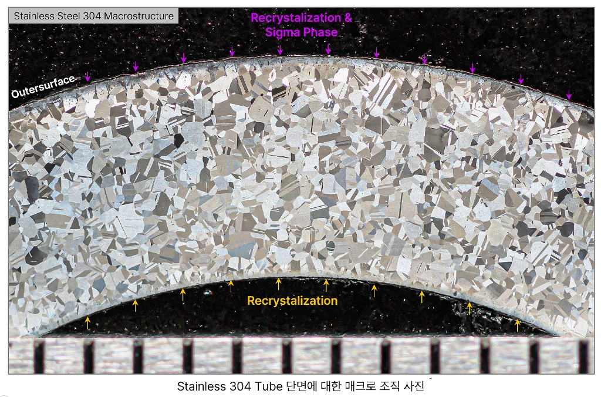
02
Duplex Stainless Steel 매크로 조직
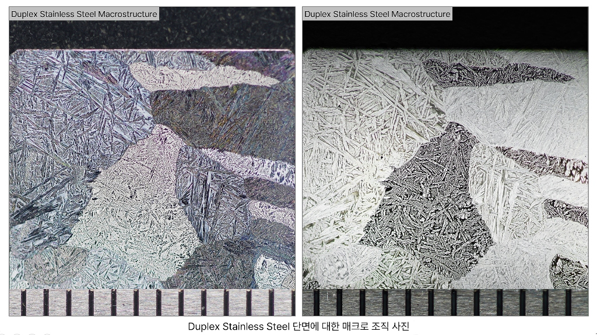
03
재질별 OM 미세조직 사진
Cast Steel, Ferrite+Pearlite, Martensite, Austenite, Ti, Cu, Al 등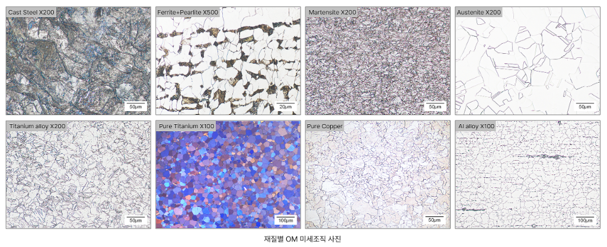
거시조직 분석
Ti-6Al-4V VAR Ingot 매크로 에칭 전처리 사례
• 실험 개요: 모 연구소에서 제작한 Ti-6Al-4V 합금 VAR Ingot에 대한 전면 매크로에칭을 수행하기 위한 전처리 의뢰 건.
• 검사 방법: 전면 Grinding(측면부 Hand Grinder로 수행) -> Macro etching (Modified Kroll reagent)
01
인수된 시험편의 형상 및 매크로 조직 사진
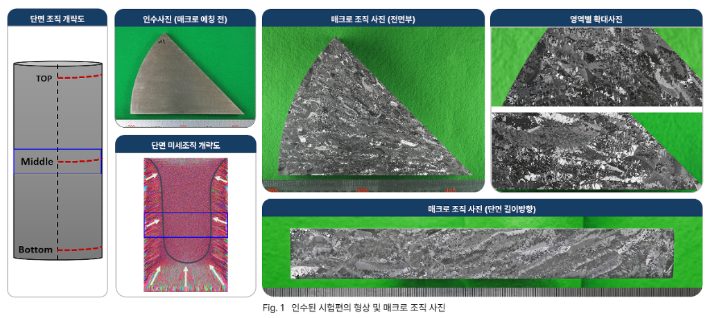
02
전면부 매크로 조직 사진 및 모식도
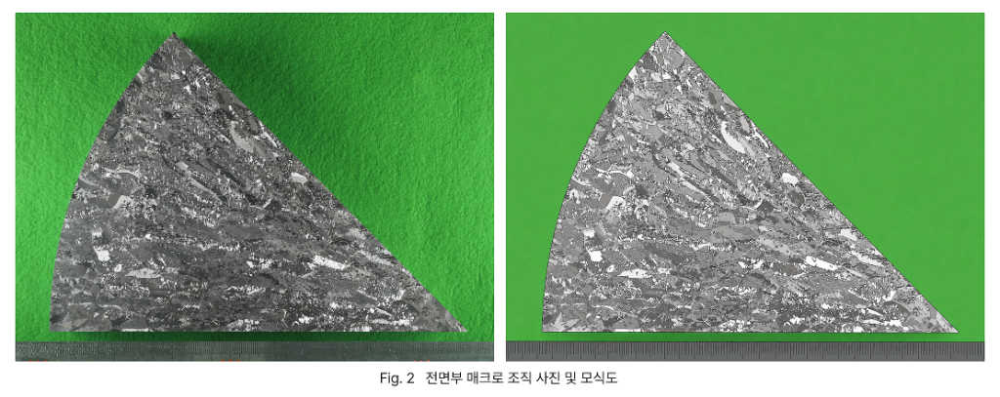
03
단면 길이방향 매크로 조직 사진 및 모식도
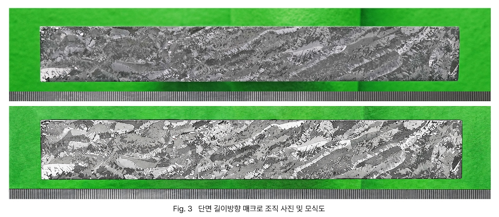
단류선 검사
단류선(Grain Flow) 정밀 에칭 및 단면 검사
• 단조/성형 제품 단면에 대한 매크로 에칭을 통해 금속 단류선(Grain Flow) 평가
01
Hole Saw 내부 부품의 단류선(Grain Flow) 검사 결과
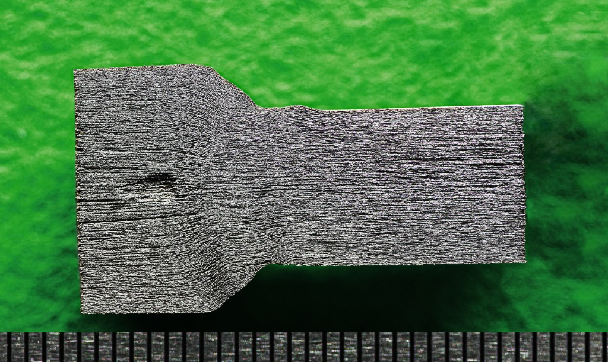
SEM 미세조직
SEM 미세조직 관찰
• 주사전자현미경(SEM) SE, BSE 모드를 통한 고배율 미세조직 관찰 및 상(Phase) 분포 정밀 평가
01
SEM 미세조직 관찰 (Nd계, Bi계 소재)
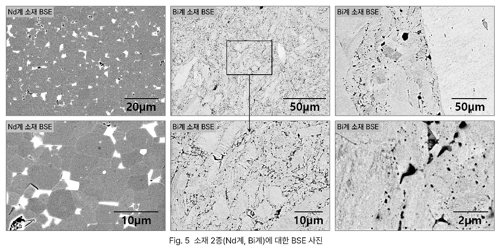
EDS 성분분석
EDS 미세 영역 및 성분 분석
• 미세 영역 및 단면 영역별 EDS 분광분석을 통한 주요 원소 분석
01
단면에 대한 EDS 성분분석 결과
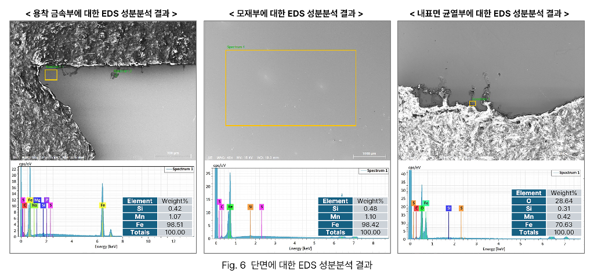
EPMA 성분분석
EPMA 원소 매핑 및 확산 깊이 정량 분석
• EPMA 면분석(Mapping) 및 원소 확산 깊이 프로파일 정량 측정 평가
01
EPMA 확산 깊이 프로파일 및 매핑 분석
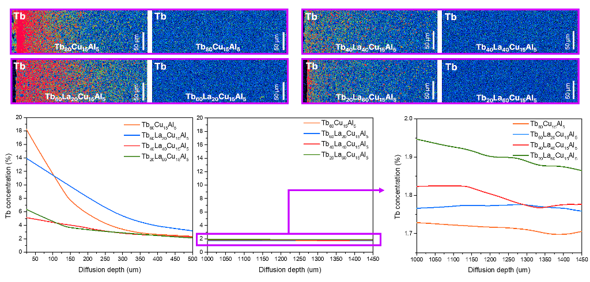
02
EPMA Data 원소 분포 정량 매핑 분석
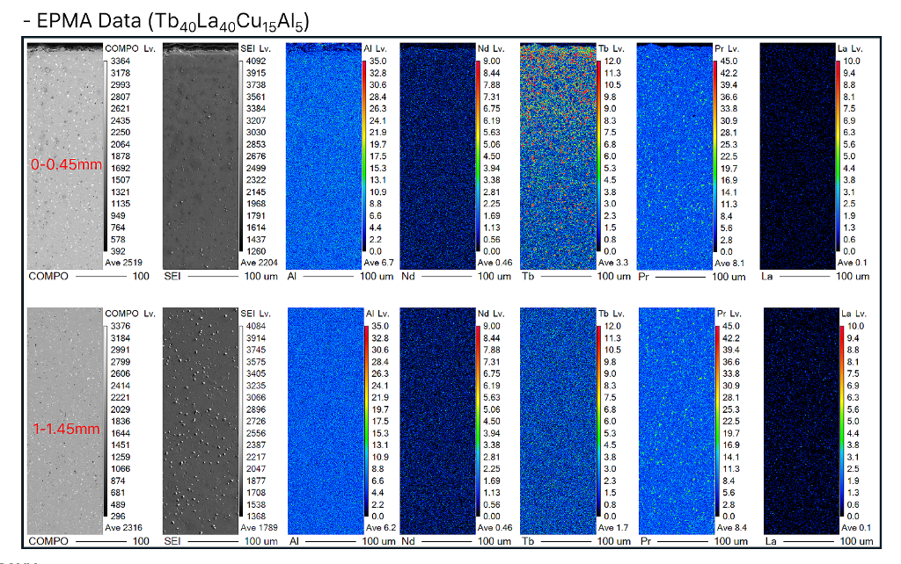
손상 원인 분석
보일러 튜브 균열 및 파손 원인 분석
• 파단면 분석,(Fractography), 주사전자 현미경 분석, OM 미세조직 분석을 통한 이종 용착금속 확인, 경도 측정을 통한 종합분석
• Fin 용접 결함부 기점 피로 파괴 전파 및 준벽개 파단 메커니즘 분석 및 재발방지 대책 수립
01
파단면에 대한 SEM 분석 결과
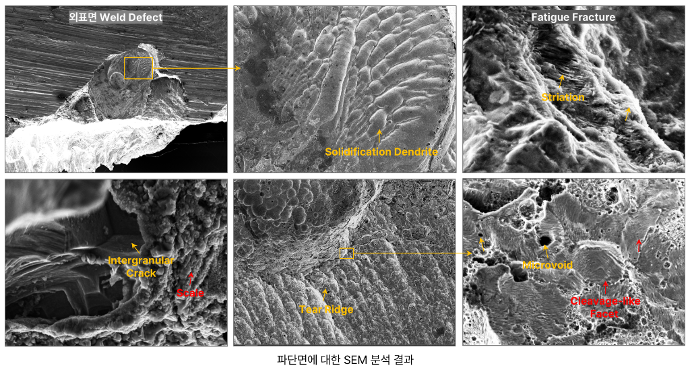
02
손상부 단면에 대한 OM 미세조직 사진
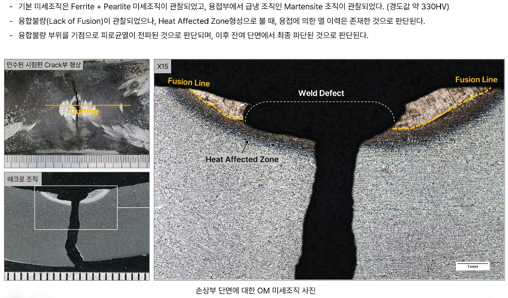
03
손상부 단면에 대한 OM 미세조직 사진 (계속)
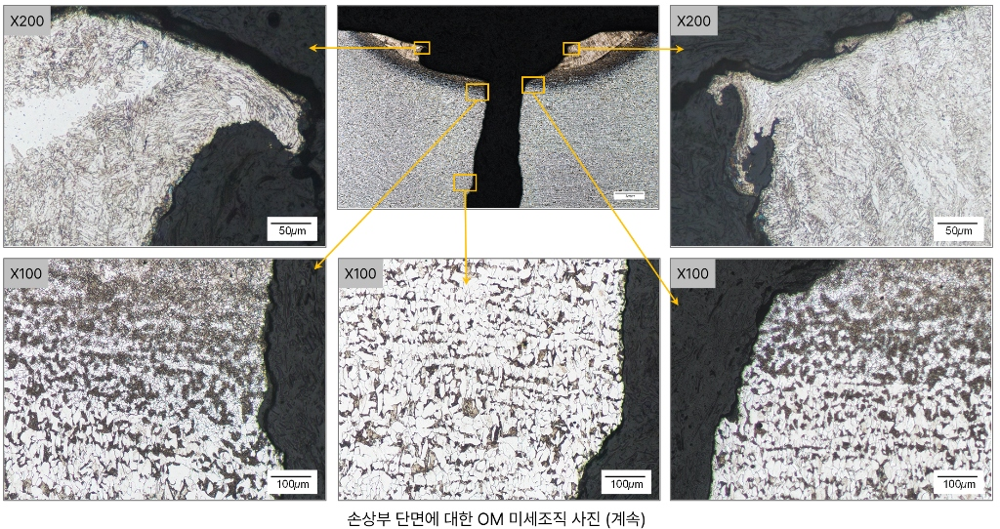
04
손상부 단면에 대한 경도 측정 결과
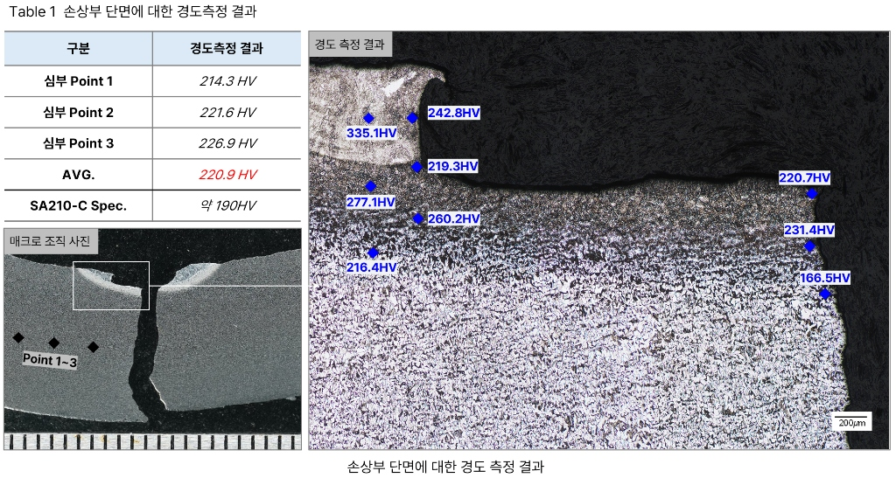
용접성 평가
용접성 평가
• 용접부 단면 검사를 통한 건전성 평가 및 미세조직, 경도 측정 등 수행
01
ISO 5817에 따른 용접부 단면 검사 결과
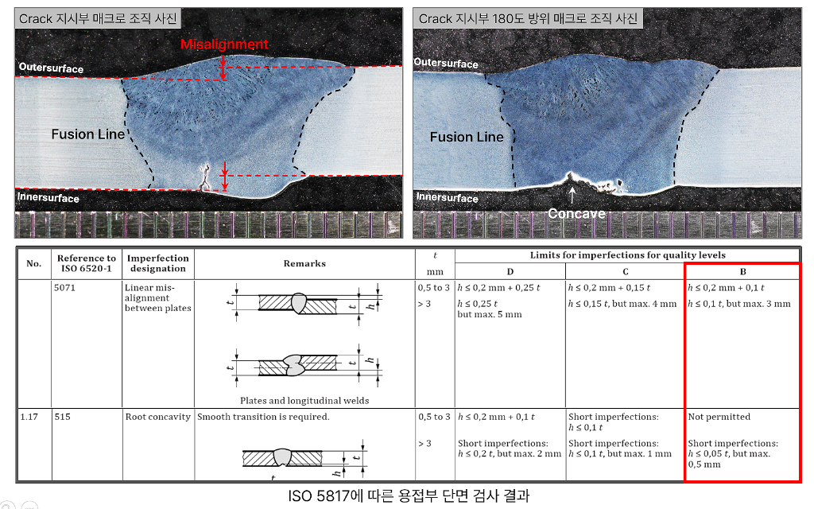
02
AMS 4956 재질 용접 시험편 Macrostructure 분석 결과
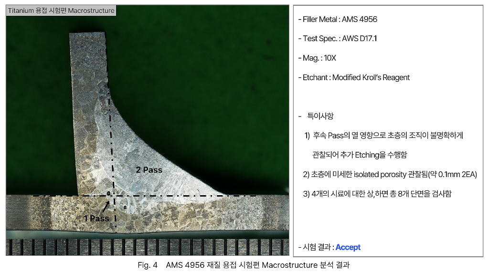
현장 비파괴
현장 Replica 조직 검사
• 가동 중인 고온 설비 부품 표면의 현장 Replica Film 복제를 통한 미세조직 분석 및 열화 상태 비파괴 진단
01
Replication Method 모식도
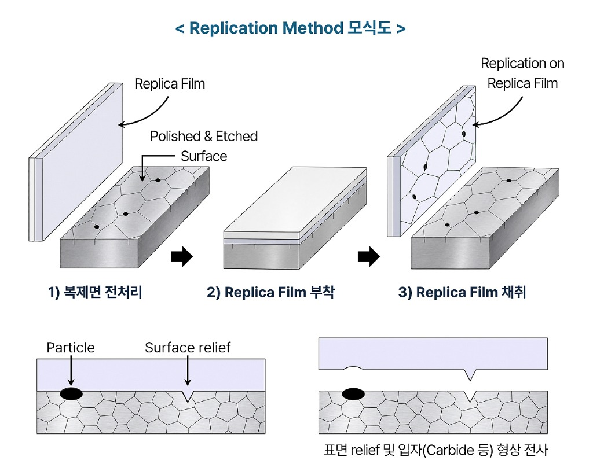
02
실제 현장 분석 및 미세조직 복제 결과
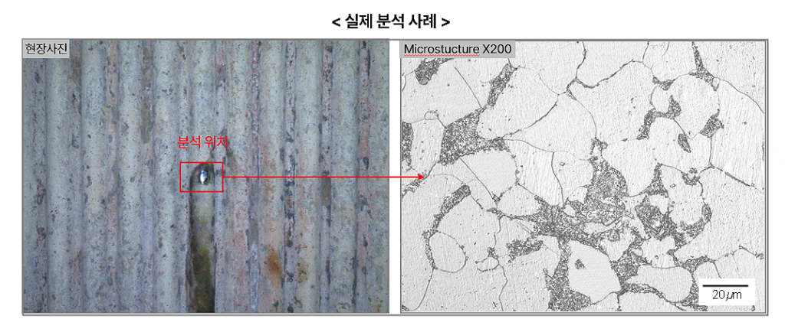